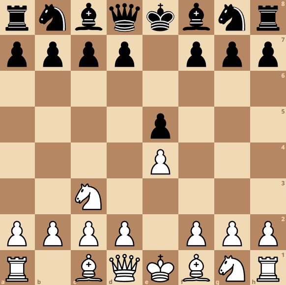

Венская партия возникает на доске после ходов 1.e4 e5 2.Кc3. Белые принимают решение не развивать королевского сразу, блокируя тем самым пешку f2, а развить коня ферзевого фланга и дважды взять под контроль поле d5. У черных 2 ответа: 2…Кf6 и 2…Кc6. Последний ход более пассивный, встречается редко. Также, что можно сказать про ход 2…Кc6, это то что, он может привести к небезызвестному гамбиту Стейница 1.e4 e5 2.Кc3 Кc6 3.f4 exf4 4.d4!